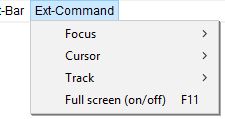

Ext-Command Menu
The Ext-Command Menu (Extended Command Menu) provides access to extra commands for track focus and movement of the editing or playback cursor that are not available in the default Audacity menus. These will be of most interest to visually-impaired users or those who have difficulty using the mouse.
Shortcuts can be assigned to these commands if required.
This menu can be turned on (or off) at or the Interface pane of Preferences.
- Click, or hover, on any menu item in the image to read about that command. Skip the image
- 
Focus SubMenu
Extra commands to set focus, usually focus on one track. Find out more about the 'Focus' submenu here.
Cursor SubMenu
Extra commands to move the cursor. Find out more about the 'Cursor' submenu here.
Track SubMenu
Extra commands to operate on a track that has focus. Find out more about the 'Track' submenu here.
Full screen (on/off) F11 (on Mac ⌘ + /)
Toggle full screen mode with no title bar.
Minimize all Projects Option + ⌘ + M - Mac only
On Mac only there is an extra command in this menu "Minimize all projects", shortcut Option + ⌘ + M, which minimizes all Audacity projects that you have open.